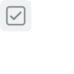

Not public
Default listing visibility is Unlisted. Figma review can take longer than a sitting. Do not tick Submit until the listing copy is what you want.
Load in Figma
Import the packed plugin
Figma desktop · Quick Actions → Import plugin from manifest… → publish/plugin/manifest.json in this folder (already built).
Run it once on a file with components
Figma desktop · Plugins → Development → Component scorecard.
Tick one criterion, hide completed, click Feedback and confirm it opens the hop.
Listing
Open the publish dialog
Figma desktop · Plugins → Development → Component scorecard → Publish. Official steps: Publishing plugins.
Keep plugin id 1494664241767135067
Already in package.json → figma-plugin.id and in generated manifest.json. If Figma shows a different id on first publish, stop and paste that id, then rebuild.
1494664241767135067
Name
Publish dialog → name.
Component scorecard
Tagline
Publish dialog → tagline / short description.
Score design-system components against a checklist you control
Description
Publish dialog → description. Aligns with _docs/spec.md.
Component scorecard lists every standalone component in the open Figma file and lets you tick it against a checklist your team edits in Markdown. Use it while you maintain a design system: open a library file, work through layout, naming, accessibility, and instance hygiene, then hide completed items to see what is left. Ticks and your checklist stay in Figma on your account. The plugin does not use the network. Feedback: https://dannyhope.co.uk/feedback A Danny Hope plugin: https://dannyhope.co.uk
Category
Publish dialog → category. Pick a leaf, not a group name.
Icon
Publish dialog → icon · file in this pack.

{kind=link}
Screenshots
Publish dialog → images. Capture the plugin iframe on a real library file after the smoke test.
Honest product UI, not a marketing mock. At least one.
Homepage URL
Publish dialog → website / homepage. Hop file: dannyhope.co.uk site repo component-scorecard/index.html (not live until that site is deployed).
https://dannyhope.co.uk/component-scorecard
Support / feedback URL
Publish dialog → support or contact. Shared hop: https://dannyhope.co.uk/feedback.
https://dannyhope.co.uk/feedback
Security and distribution
Confirm network access is none
Publish dialog → network / security · from this repo’s manifest.json.
Visibility Unlisted unless you asked for Public
Publish dialog → distribution / visibility.
Submit for review
Submit for review
Publish dialog → Publish. Do not auto-publish from here.
After approval, people reach the listing via the hop once dannyhope.co.uk is deployed. Review time is up to Figma.